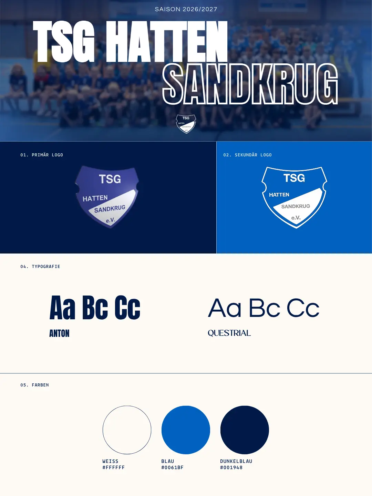

Social Media TSG Hatten-Sandkrug
Für den TSG Hatten-Sandkrug entwickelte ich ein Social-Media-Konzept für vier Mannschaftskanäle auf
Instagram. Ziel des Projekts war es, einen einheitlichen und wiedererkennbaren Auftritt zu schaffen
sowie ein Designsystem zu entwickeln, das von den Verantwortlichen langfristig eigenständig genutzt
werden kann.
Ich übernahm die Konzeption und Gestaltung der Designvorlagen. Dabei entstanden Templates für
Spielankündigungen, Ergebnisse, Spielpläne, Spielervorstellungen, Sponsornews, Geburtstagswünsche,
Spielerverabschiedungen, Informationsbeiträge sowie Highlight-Cover. Das Gestaltungskonzept orientiert
sich an den Vereinsfarben Blau und Weiß: Für jedes Format wurde jeweils eine blaue und eine weiße
Variante entwickelt, die abwechselnd im Feed veröffentlicht werden können und so für ein
abwechslungsreiches, einheitliches Gesamtbild sorgen.

Zusammenstellung von Logos, Typografie und Farben
Social Media Brand Kit